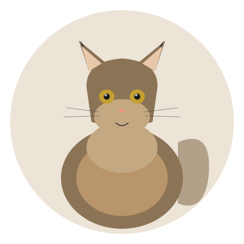

20 pounds of fur, chirps, and dog-like loyalty. | 2026-06-12 · MeltPet · 5 min read
Last updated: 2026-07-03

22 pounds of fur, lynx tips, and a personality that confuses the dog.
My Aunt's Maine Coon Greeted Me at the Door. Then He Followed Me Room to Room. I Checked the Tag to Make Sure He Was a Cat.
My aunt has a red tabby Maine Coon named Fergus. Fergus is 22 pounds and not fat —he's built like a small lynx with a ruff of fur around his neck that makes him look like he should be on the cover of a fantasy novel. Fergus meets every visitor at the door, escorts them to the living room, and then sits on the coffee table and chirps at them until they acknowledge his presence. He plays fetch with crumpled receipts. He comes when called. He has never, in his eight years of life, done anything stereotypically cat-like except sleep in a sunbeam for four hours a day.
Maine Coons are the largest domestic cat breed in the world. They're also, personality-wise, the least cat-like cats you can own.
Big Cat. Big Everything.
A male Maine Coon hits 15–25 pounds. Females run 10–15. But the weight doesn't tell the whole story —these cats are proportionally huge. Long bodies, long legs, massive paws with tufts of fur between the toes (snowshoe feet, adapted for walking on snow), and a tail that can stretch 16 inches. From nose to tail tip, a large male can exceed 40 inches. They don't reach full adult size until age 3–4, which is late for a cat. You'll think your 18-month-old Maine Coon is full-grown and then he'll put on another 5 pounds and two inches of height over the next two years.
This size has practical implications. Standard cat carriers don't fit them —you need a medium dog carrier. Standard cat trees tip over under their weight —you need a heavy-base tree rated for large breeds. Standard litter boxes are too small —many Maine Coon owners end up using large plastic storage totes with an entrance cut in the side. These aren't designer upgrades. They're necessary accommodations for a cat the size of a small dog.
The Personality That Sells the Breed
Maine Coons are described as "dog-like" so often it's practically part of the breed standard, and it's not wrong. They greet visitors. They follow their people. Many will play fetch —genuinely, with retrieval and return, not the "chase the ball and stare at it" version most cats do. They're vocal but not loud —Maine Coons chirp and trill instead of yowling. The sound is distinctive and, to people who love the breed, one of the best things about living with one.
They're not typically lap cats. Most Maine Coons prefer to be near you —on the arm of the couch, on the coffee table in front of you, on the floor touching your foot —rather than on you. There are exceptions, but if you want a cat who will curl up on your chest for hours, a Ragdoll is a better bet. A Maine Coon wants to be in your orbit, not on your person.
They're intensely social and don't do well left alone for 10+ hours. A lonely Maine Coon is a depressed Maine Coon, and depressed cats develop behavioral problems —over-grooming to the point of bald patches, litter box avoidance, destructive scratching. If you're gone all day, get two, or get a different breed.
The Coat: Gorgeous, and Work
A Maine Coon has a heavy, water-resistant double coat —long guard hairs over a dense, soft undercoat. The ruff around the neck is heavier in winter. The tail is a plume. It's beautiful. It also mats if you don't brush it. Twice-weekly combing with a metal comb is the minimum. During shedding season (spring and fall), daily brushing keeps the fur tumbleweeds under control. Mats that form behind the ears, in the armpits, and on the belly need to be worked out gently or cut out with blunt-tipped scissors. A matted Maine Coon is miserable and may need to be shaved under sedation.
They're generally good about brushing if you start young. Fergus purrs through his daily combing because my aunt started when he was 10 weeks old and paired it with treats every single time.
Health: HCM and the Rest
Hypertrophic cardiomyopathy is the big one. HCM is a thickening of the heart muscle that leads to heart failure, blood clots, and sudden death. It's the most common heart disease in cats, and Maine Coons have a genetic form of it. A DNA test exists for one of the mutations (the MYBPC3 gene), but it doesn't catch all cases —a negative DNA test doesn't guarantee the cat won't develop HCM. Annual cardiac ultrasounds by a board-certified cardiologist are recommended for breeding cats. A breeder who only runs the DNA test and doesn't do ultrasound screening is cutting corners.
Hip dysplasia is also common —those big bodies on those big frames put stress on the hip joints. Spinal muscular atrophy (SMA) is a genetic condition that causes muscle wasting and weakness; it's not painful but it affects mobility. The DNA test exists and any breeder should have run it on both parents.
A Maine Coon from a reputable breeder with documented cardiac ultrasound, hip scores, and genetic screening typically costs $1,500–$3,000. Yes, that's a lot for a cat. A Maine Coon from a backyard breeder who "guesses" their cats are healthy costs $500–$1,500, and the HCM diagnosis at age four costs $3,000–$8,000 in cardiology visits, medications, and heartbreak. Pick your price.
📚 Sources
Kittleson, M.D., et al. (1999).Familial Hypertrophic Cardiomyopathy in Maine Coon Cats. Circulation.
Maine Coon Breeders & Fanciers Association.Health & Genetics. mcbfa.org